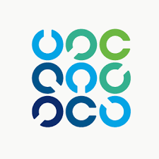

Information Systems Audit and Control Association (ISACA)
Global professional association focused on IT governance, risk management, cybersecurity, and assurance.
My Involvement: Student member since 2023, attending cybersecurity conferences and training.
Visit Website